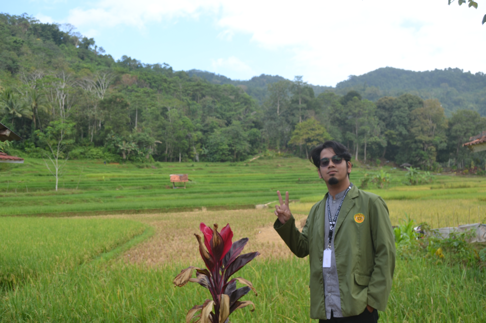
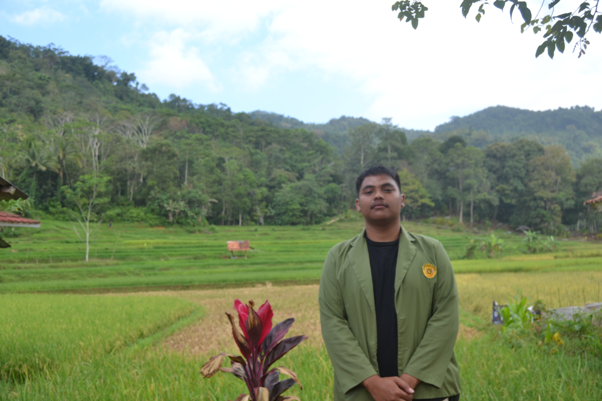
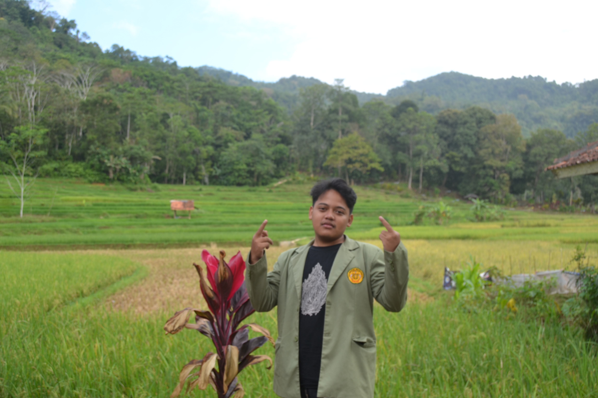
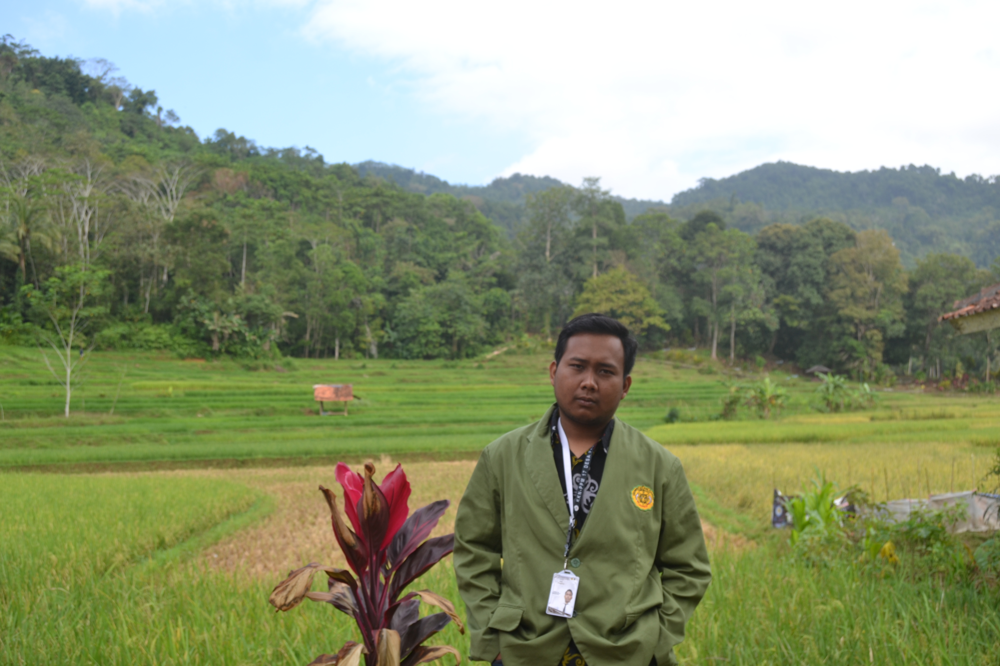
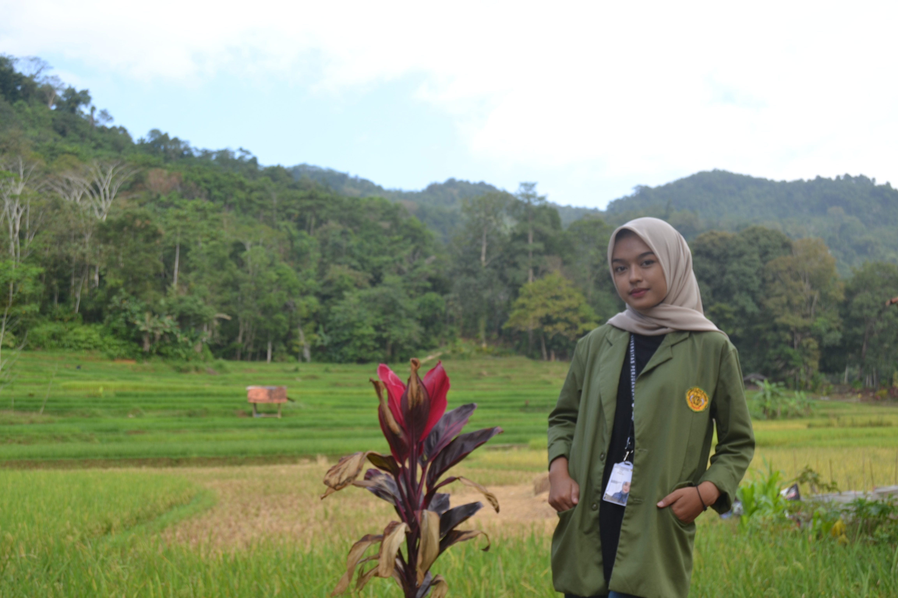
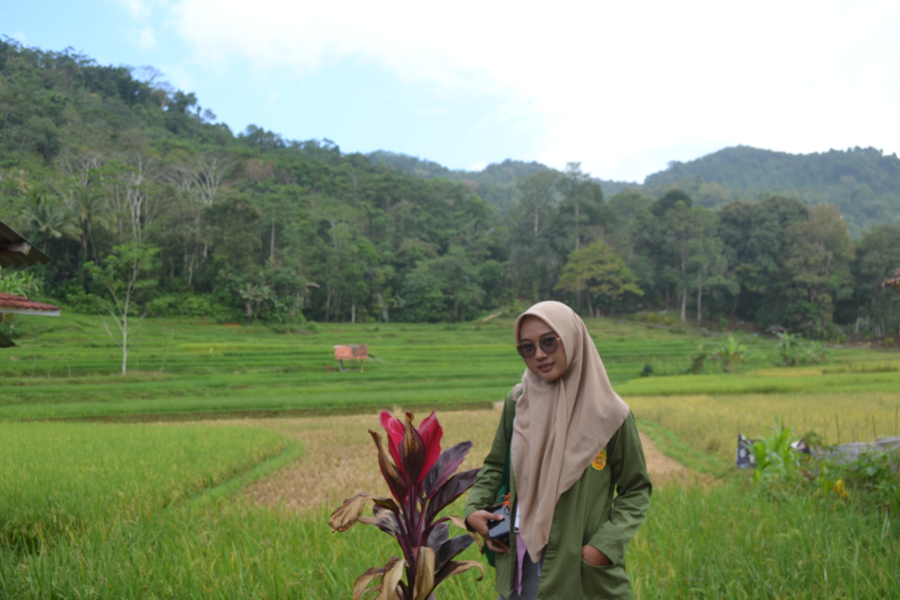
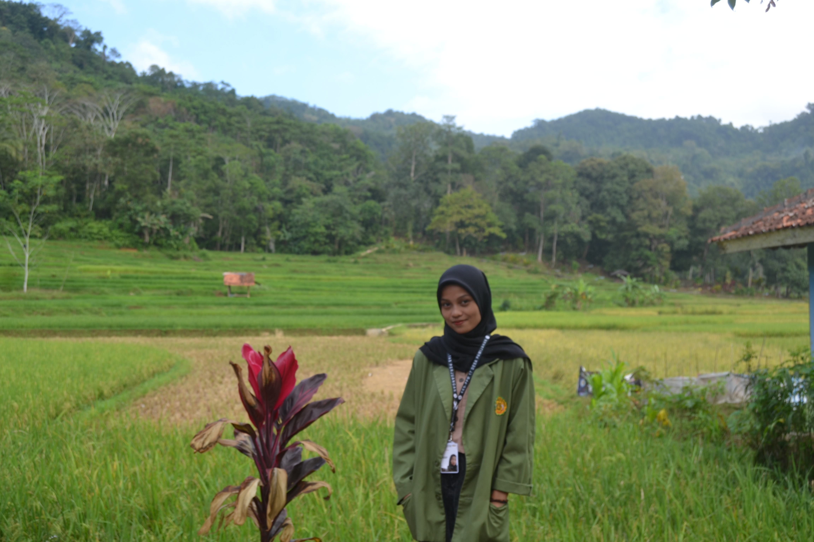

Sejarah Pamijahan
Pamijahan yang berlokasikan di daerah selatan pulau Jawa ini, dahulu bernama “SAFAR WADI” yang merupakan kosa kata Bahasa Arab “safar” berarti “jalan” dan “wadi” berarti “lembah atau jurang”. Secara terminologis, Safar Wadi diartikan jalan yang berada di atas jurang/lembah. Hal ini berdasarkan dengan letaknya yang berada di antara dua bukit di pinggir sungai. Penamaan Safar Wadi ini juga dimaknai tersirat oleh warga penduduk Pamijahan agar selalu berhati-hati menjalani hidup di muka bumi, karena halnya hidup di muka bumi atau dunia itu laksana berjalan di atas jurang yang senantiasa bisa membawa bahaya atau celaka.
"Pamijahan Milik Kita"
Daftar Harga Wisata Religi Pamijahan
Wisata Religi Pamijahan
Pamijahan adalah sebuah tempat yang kaya akan nilai-nilai religius terletak dikawasan jawa barat indonesia,wisata religi pamijahan menawarkan pengalaman spiritual yang mendalam bagi para pengunjung yang mencari kedamaian dan kebersamaan,dengan alam serta tuhan.

Syekh Kh.Abdul Muhyi
Pamijahan
Syekh Abdul Muhyi dilahirkan pada tahun 1650 M di Mataram. Di sini, Mataram ada yang menyebut Lombok dan ada yang menyebut Kerajaan Mataram Islam. Ayahnya bernama Sembah Lebe Wartakusumah, seorang bangswan Sunda keturunan Raja Galuh Pajajaran. Pada saat itu, kerajaan tersebut merupakan bagian Kerajaan Mataram Jawa.

Goa Saparwadi
Pamijahan
Goa Safarwadi merupakan tempat untuk berkumpulnya para wali kala itu,Goa tersebut juga digunakan Syekh Abdul Muhyi untuk mendidik santri-santrinya.Goa Safarwadi yang berlokasi di Pamijahan Kecamatan Bantarkalong, Kabupaten Tasikmalaya, Jawa Barat ini memiliki cerita mitos yang masih dipercaya masyarakat.

Syekh Khatib Muwahid
Panyalahan
Syekh khatib muwahid berasal dari kerajaan demak, ia merupakan kaka ipar dari syekh kh. Abdul muhyi atas pernikahannya dengan nyi kudrat yang merupakan kaka kandungan syekh kh. Abdul muhyi.Setelah syekh kh. Abdul muhyi wafat,ia meneruskan perjuangannya menyebarkan agama islam di tanah jawa terutamanya sisi selatan.
Syekh Kh.Abdul Kohar
Pandawa
Syekh Kh.Abdul Kohar Berasal dari Mataram,Menuju Tasik Selatan bersama Syekh Abdul Muhyi untuk mencari Goa Saparwadi
Syekh Eyang Marsidan
Cicandra
Syekh Sembah Dalem Sacaparana Bengkok
Parungpung
Mertua Syekh Abdul Muhyi
Raden Yudanagara
Pamijahan
Paman Syekh Abdul Muhyi
Raden Subamanggala
Pamijahan
bergelar Raden Tumenggung Wiradadaha IV dipanggil Dalem Pamijahan
Sembah Dalem RA.Tanganziah
Pamijahan
Ibunda Syekh Abdul Muhyi
"Pamijahan Milik Kita"
KKN 17 PAMIJAHAN
UNIVERSITAS PERJUANGAN TASIKMALAYA
-
"حَسْبُنَا اللَّهُ وَنِعْمَ الْوَكِيْلُ نِعْمَ الْمَوْلَى وَنِعْمَ النَّصِيْرُ"

Hasan
Ciamis, Jawa Barat -
"Kunjunganmu ke Pamijahan memberi inspirasi untuk memperdalam spiritualitas."
Abil
Tasikmalaya, Jawa Barat -
"Setiap langkahmu di sini membangkitkan semangat untuk mencari makna hidup."
Adam
Tasikmalaya, Jawa Barat -
"Pengalamanmu di Pamijahan membawa transformasi positif dalam dirimu."
Alfan
Tasikmalaya, Jawa Barat -
"Pamijahan adalah tempat di mana roh dan jiwamu bersatu dalam kesatuan yang sempurna."

M.Rifky
Tasikmalaya, Jawa Barat -
"Ziarah di Pamijahan, lepaskan bebanmu dan isi hatimu dengan kebahagiaan spiritual."
Fahmi
Tasikmalaya, Jawa Barat -
"Jika terjatuh di perjalanan, Pamijahan mengajarkan untuk bangkit dengan keteguhan hati."
Jihan
Tasikmalaya, Jawa Barat -
"Pamijahan adalah perjalanan menuju kebenaran, diiringi doa dan harapan."

Kania
Tasikmalaya, Jawa Barat -
"Jangan ragu mengeksplorasi Pamijahan, karena di sini terdapat kebijaksanaan luhur."

Syafa
Tasikmalaya, Jawa Barat -
"Di tengah pesona alam Pamijahan, temukan kedamaian jiwa yang mengagumkan."
Lutfhi
Banjar, Jawa Barat -
"Pamijahan mengajarkan tentang cinta kasih dan kerendahan hati dalam setiap langkahmu."
Silva
Tasikmalaya, Jawa Barat -
"Di Desa Pamijahan, setiap langkah adalah perjalanan spiritual yang memberikan kesempatan untuk merenung, berdoa, dan terhubung dengan alam."
Tiara
Garut, Jawa Barat -
"Mengunjungi Pamijahan adalah merasakan kedekatan dengan yang Ilahi dan keindahan alam yang menyentuh hati."
Ayu
Ciamis, Jawa Barat -
"Sambutlah kebahagiaan dan kedamaian di Desa Pamijahan, tempat di mana doa dan rasa syukur terdengar dalam alunan angin dan gemericik air."
Viska
Tasikmalaya, Jawa Barat -
"Pamijahan: Destinasi wisata yang membawa jiwa Anda untuk berpadu dengan alam semesta, menghadirkan kedamaian yang tak ternilai."
Euis
Tasikmalaya, Jawa Barat
Gallery
Kontak
"Mari kita berbagi pengalaman dan wawasan,dan bersama-sama,kita bisa menginspirasi perubahan positif dalam hidup"
Kunjungi